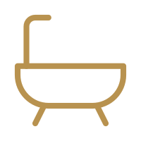
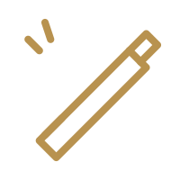
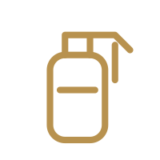

Guida pratica · aggiornata a novembre 2026
Dalla formazione abilitante all’apertura dello studio: qualifica, requisiti del locale, rifiuti speciali, partita IVA, codici ATECO, Camera di Commercio, costi e uffici a cui rivolgersi. Le norme sono regionali e cambiano spesso: i collegamenti portano ai siti ufficiali.
Nel Lazio, chi non possiede già un requisito professionale riconosciuto deve frequentare il percorso regionale di Operatore delle attività di tatuaggio: il percorso ordinario è di almeno 800 ore presso un ente autorizzato dalla Regione, con esame finale. Questo percorso comprende tricopigmentazione, dermopigmentazione e tatuaggio artistico; restano salvi esoneri, crediti ed equivalenze, e il regime distinto delle estetiste abilitate nei limiti consentiti. Il modulo di tricopigmentazione fa parte del percorso e non è una qualifica autonoma.
I corsi privati di pochi giorni, per esempio di dermopigmentazione, non sostituiscono il corso abilitante: possono ampliare le conoscenze tecniche e perfezionare la manualità, ma il requisito di formazione di base deve esserci sempre. Nelle altre Regioni il requisito può essere diverso (per esempio la qualifica di estetista): ogni Regione ha il proprio.
Sono sette passaggi, nell’ordine in cui conviene affrontarli. Il primo è quello da cui non si può prescindere.
La legge regionale 2/2021 considera la dermopigmentazione, o trucco permanente, una tecnica di tatuaggio a fini estetici. La formazione richiesta è quella di Operatore delle attività di tatuaggio. Le regole attuative sono nella delibera di Giunta regionale 270/2022.
Richiede almeno 800 ore presso un ente autorizzato dalla Regione e il superamento dell’esame finale, a cui si accede avendo frequentato la quota minima di ore prevista dallo standard (allegato 5 della DGR 270/2022). L’accesso richiede la licenza media e la maggiore età oppure l’assolvimento del diritto-dovere all’istruzione e alla formazione; per i cittadini stranieri il livello B1 di italiano, salvo attestazione equivalente, con prove di verifica in selezione; per i cittadini extracomunitari un permesso di soggiorno valido per tutta la durata del percorso o la prova della domanda di rinnovo. Crediti. Non sono automatici e seguono strade diverse: i crediti di frequenza della procedura ordinaria, entro un limite fissato dallo standard; il riconoscimento regionale per chi ha titoli pubblici di tatuaggio o trucco permanente conseguiti dal 1998 in poi, con percorsi cumulabili di durata consistente, che può arrivare a coprire l’intero corso; i crediti per esperienza professionale documentata (contratti e mansioni negli ultimi anni), che riducono le ore di pratica. Criteri e limiti sono nell’allegato 5 della DGR. Gli enti devono avere l’autorizzazione regionale: la Regione pubblica le informazioni nella sezione «Autorizzazione corsi non finanziati». Il piercing ha un percorso proprio di 300 ore.
Il percorso è descritto nella pagina Corsi di formazione e nell’articolo Corsi riconosciuti nel Lazio.
Per la delibera 270/2022 la dermopigmentazione può essere eseguita da chi ha l’abilitazione di estetista (L. 1/1990) e dimostra di aver frequentato il corso per l’uso del dermografo e per le prescrizioni igienico-sanitarie (circolari del Ministero della Salute e D.M. 206/2015). Nel modulo di SCIA l’estetista dichiara entrambe le cose. Valgono comunque i requisiti del locale e le regole su sterilizzazione e rifiuti. Per ore ed ente del corso si rimanda alla Regione. Questo regime non si estende in automatico al tatuaggio artistico o alla tricopigmentazione: per la singola tecnica, l’apparecchiatura e il titolo si chiede conferma scritta alla Regione. A livello nazionale il parere del Ministero (2017) richiede inoltre una formazione specifica sull’apparecchio. Per sapere come la Regione applica questi punti al singolo caso, va chiesto per iscritto alla Regione.
Chi ha frequentato il corso regionale da almeno 90 ore previsto dalla normativa precedente, o certifica di aver esercitato in modo continuativo per almeno cinque anni al 5 marzo 2021, è esonerato per le attività per cui spettano gli esoneri, cioè tatuaggio e piercing. Non è esonerato per la dermopigmentazione: la circolare regionale 844122/2022, che riguarda il regime transitorio, precisa che per questa resta il percorso di 800 ore, con riduzione per crediti, salvo diverso titolo riconosciuto.
Il tatuaggio con finalità medica è riservato al personale sanitario e non rientra nella disciplina dell’operatore di tatuaggio. Per la dermopigmentazione estetica, in Lazio, non risulta un obbligo di titolo sanitario.
La normativa laziale parla di operatore delle attività di tatuaggio, operatore delle attività di piercing, estetista e personale sanitario. Il termine «dermopigmentista» non compare come qualifica regionale: la dermopigmentazione, o trucco permanente, è un contenuto dello standard dell’operatore di tatuaggio. Una figura con quel nome esiste in altre Regioni, per esempio in Abruzzo. Il microblading è indicato nelle linee guida tra le pratiche di tatuaggio.
Con la determinazione G11910 del 12 settembre 2024 la Regione ha approvato la procedura per il riconoscimento delle qualifiche di operatore di tatuaggio e di piercing ottenute all’estero; la determinazione G03998 del 26 marzo 2026 la integra. La pagina regionale distingue lo stabilimento in Italia (serve il riconoscimento), la prestazione temporanea o occasionale di chi è stabilito in uno Stato UE o SEE o in Svizzera (procedura separata) e le qualifiche di Paesi terzi, riconoscibili con la stessa procedura ma senza prestazione temporanea. Il riconoscimento disposto dal Lazio vale nel Lazio. Determinazione G11910/2024 · Pagina della Regione.
Aggiornamento. Gli standard regionali prevedono almeno 10 ore per biennio, svolte autonomamente, con la documentazione da conservare.
MB Accademia, a Roma, è un ente accreditato dalla Regione Lazio per il corso di Operatore delle attività di tatuaggio di almeno 800 ore; l’autorizzazione è la determinazione G01377 del 6 febbraio 2026 (MB S.r.l., via Genova 23, Roma), che comprende anche il corso di piercing di 300 ore. Insegno tricopigmentazione in questo corso: lo standard regionale prevede per la tricopigmentazione un minimo di 80 ore, tra lezioni tecniche ed esercitazioni.
Calendari, costi, requisiti di accesso e iscrizioni vanno richiesti direttamente all’Accademia. L’autorizzazione regionale è pubblica e si può verificare sul sito della Regione.
I valori seguenti sono quelli delle linee guida regionali del Lazio (Allegato 1 della delibera 270/2022). Prima di firmare un contratto d’affitto, il locale va fatto verificare dalla ASL e dal SUAP del Comune: i requisiti dell’immobile incidono più di ogni altra scelta.
Locale dedicato in modo esclusivo: almeno 9 m², più almeno 5 m² per la sterilizzazione, quindi 14 m² in totale se è nella stessa stanza. Nessuna superficie massima indicata.
Box non comunicanti di 6 m² ciascuno, con pareti alte almeno 2,20 m e 0,50 m di spazio verso il soffitto; la sterilizzazione va in un locale a parte.
Almeno 2,70 m nei locali con presenza continuativa di persone e 2,40 m negli accessori.
Finestre apribili pari ad almeno un ottavo della superficie del pavimento, oppure impianto conforme alla norma UNI 10339.
Pavimenti compatti, antiscivolo, lavabili e disinfettabili. Pareti impermeabili, lavabili e resistenti ai disinfettanti fino a 2 m.
Sala d’attesa separata da pareti a tutta altezza; il percorso verso il bagno non attraversa le zone di lavoro.
Area dedicata, distinta da quella operativa: lavaggio, confezionamento e autoclave con controllo di ogni ciclo, oppure solo materiale sterile monouso sigillato.
Acqua calda e fredda con comando non manuale (pedale o fotocellula), sapone e asciugamani monouso.

BagnoUn solo bagno per i clienti, con antibagno e senza accesso diretto dai locali di lavoro.
Almeno 2 m², con lavello per gli stracci e contenitori dei rifiuti con coperchio a pedale.
La zona sporca è separata da quella pulita e ha un lavello con acqua calda e fredda per lavare gli strumenti. Il materiale pulito e sterilizzato si conserva in armadi chiusi, con superfici impermeabili e lavabili. Gli arredi permettono la pulizia completa ogni giorno e la disinfezione periodica.
È ammesso un solo bagno, per i clienti. Non deve avere accesso diretto dai locali di lavoro: serve un antibagno, dove si può tenere solo materiale per l’igiene personale. Pareti impermeabili fino a 2 m, illuminazione artificiale, aerazione naturale o meccanica. Se ci sono dipendenti valgono le regole del Titolo II del D.Lgs. 81/08; lo spogliatoio, solo con dipendenti, ha armadietti individuali secondo l’Allegato IV dello stesso decreto.
Le linee guida del Lazio chiedono pareti e rivestimenti impermeabili e perfettamente lavabili fino a 2 m di altezza nel locale operativo, resistenti ai disinfettanti di comune impiego; la stessa formulazione («impermeabile, facilmente lavabile e disinfettabile per almeno 2 m») vale per sterilizzazione e zona sporca, mentre per bagno e antibagno è richiesta una superficie impermeabile e facilmente lavabile.
Per la scelta dei materiali conviene confrontarsi con la ASL prima dei lavori.
L’immobile deve rispettare le norme urbanistiche ed edilizie e i regolamenti edilizi locali per la destinazione d’uso «servizi alla persona».
Il titolare deve far rispettare a tutti le stesse norme igienico-sanitarie. La checklist di controllo dell’ASL prevede locali operativi separati per tatuaggio, piercing ed estetica. Con l’art. 48 della L.R. 11/2026 (BUR n. 52 del 30 giugno 2026), che modifica la L.R. 2/2021, la Regione ha previsto una disciplina attuativa per l’esercizio nella stessa sede di più operatori, anche con contratti di coworking o di affitto di poltrona o cabina, e per la coesistenza con gli studi di medicina estetica, previa valutazione sanitaria. Non è un permesso automatico: servono gli atti attuativi della Giunta regionale, e il progetto va verificato con la Regione, l’ASL e il SUAP.
Per le altre Regioni i numeri possono cambiare: vedi le schede in Regole Regione per Regione. Approfondimento sulle norme del locale: Igiene e normative: come riconoscere uno studio adatto.
Aghi e taglienti usati in uno studio di tatuaggio sono considerati rifiuti sanitari pericolosi a rischio infettivo, come quelli di un ambulatorio, anche se l’attività non è sanitaria: lo spiega l’ASL di Modena richiamando l’art. 2 del D.P.R. 254/2003. Serve quindi un contratto con una ditta competente e la conservazione della documentazione di ogni ritiro.

Aghi, tubetti, rasoiCodice CER 18 01 03*. Contenitori rigidi, resistenti alla puntura e monouso, marcati come rifiuti sanitari pericolosi a rischio infettivo. Mai ricappucciare gli aghi, riempire al massimo fino a tre quarti, chiudere in modo definitivo. Nel contenitore dei taglienti non vanno altri rifiuti, per esempio i guanti.
In imballaggi rigidi marcati come rifiuti infettivi.
Flaconi di pigmenti, pigmenti scaduti, indumenti protettivi, lenzuolini, disegni e carta da ricalco: la classificazione dipende dal materiale e dal suo stato (per esempio se è contaminato) e va concordata con la ditta autorizzata.
Ritira i rifiuti in studio e può fornire i contenitori a norma. Si stipula un contratto e per ogni ritiro si compila il formulario.
Ditta autorizzata. Per ogni ritiro si compila il formulario di identificazione del rifiuto; il registro di carico e scarico e il MUD si considerano assolti se i formulari sono conservati in ordine cronologico, secondo le linee guida del Lazio.
RENTRI. La legge di bilancio 2026 (L. 199/2025, art. 1, comma 789) ha modificato l’art. 188-bis del D.Lgs. 152/2006: i produttori a cui si applica l’art. 190, commi 5 e 6, tra cui i servizi alla persona, non sono tenuti all’iscrizione al RENTRI e adempiono con le modalità alternative previste. L’esclusione non vale per qualsiasi impresa e non elimina gli obblighi di tracciabilità tradizionali: formulario e MUD vanno verificati sul caso concreto con la ditta autorizzata o con la Camera di Commercio.
In conto proprio. Fino a 30 kg al giorno si possono portare direttamente a un impianto di trattamento termico o a un punto di raccolta autorizzato. Serve l’iscrizione alla sezione regionale dell’Albo Nazionale Gestori Ambientali, e anche in questo caso il formulario.
Deposito temporaneo. Il D.P.R. 254/2003 (art. 8) e il D.Lgs. 152/2006 (art. 212) disciplinano il deposito temporaneo dei rifiuti a rischio infettivo, con tempi e condizioni che dipendono anche dalle quantità prodotte; le linee guida del Lazio non indicano tempi. La frequenza dei ritiri va concordata con la ditta e verificata con l’ASL.
Deve essere iscritta all’Albo Nazionale Gestori Ambientali nella categoria 5, raccolta e trasporto di rifiuti speciali pericolosi, e può mostrare l’attestato di iscrizione con il codice QR. La ricerca si fa attraverso la sezione regionale dell’Albo o chiedendo alla Camera di Commercio o a un’associazione di categoria. Nel preventivo vanno indicati contenitori forniti, frequenza dei ritiri, costo, formulario e certificato di avvenuto smaltimento.
Le linee guida del Lazio, nella parte sui requisiti del locale, non fissano regole su estintori e cassetta di pronto soccorso: ne parlano solo in modo generico. Si applicano quindi le norme generali sulla sicurezza nei luoghi di lavoro.

EstintoriLa valutazione del rischio di incendio segue il D.M. 3 settembre 2021, che per i luoghi a basso rischio prevede criteri semplificati. Per gli estintori il decreto indica capacità estinguente non inferiore a 13A e carica di almeno 6 kg o 6 litri. Numero e posizione li stabilisce un tecnico abilitato.
Con dipendenti valgono gli obblighi del D.Lgs. 81/08 e del D.M. 388/2003 su addetti e dotazioni.
Dichiarazioni di conformità degli impianti elettrico, termico e di ventilazione (D.M. 37/2008) e verifiche periodiche dell’impianto elettrico (D.P.R. 462/2001).
Elenco delle attrezzature, manuali, dichiarazioni di conformità e registro delle manutenzioni; schede tecniche e schede di sicurezza degli inchiostri e dei disinfettanti.
Consenso informato. Prima della prestazione il cliente firma il modulo di consenso, con documento d’identità, e riceve la nota informativa.
Clienti minorenni. L’età minima per tatuaggio e dermopigmentazione è 16 anni; dai 16 ai 18 anni serve l’autorizzazione scritta dei genitori (di entrambi, o del tutore). Dai 18 anni si procede in autonomia.
Questa sezione non riporta cifre precise: importi, aliquote e scadenze cambiano ogni anno. Prima di versare qualsiasi somma vanno verificati sul sito dell’ente (Camera di Commercio di Roma, INPS) o con un commercialista.
Una sola pratica telematica per Registro Imprese (Camera di Commercio), Agenzia delle Entrate (Partita IVA, modello AA9/12), INPS e, se previsto, INAIL. Servono firma digitale e PEC.
La ditta individuale si iscrive al Registro Imprese; chi ha i requisiti può chiedere l’iscrizione all’Albo imprese artigiane.
Forfettario, se se ne hanno i requisiti, oppure ordinario. Nel forfettario si tassa una percentuale dei ricavi (coefficiente di redditività) e non si scalano le spese reali.
Il corso abilitante di settore (vedi punto 1) e, se ci sono dipendenti, i corsi di sicurezza (vedi punto 7).
La Partita IVA si apre con la ComUnica (modello AA9/12 dell’Agenzia delle Entrate); i costi sono quelli della pratica camerale, indicati più sotto. Il commercialista, se si sceglie, ha un compenso a parte.
Se ci sono i requisiti, il forfettario prevede un’imposta sostitutiva agevolata, con una soglia di ricavi e condizioni di accesso. Soglie e aliquote cambiano nel tempo: requisiti e coefficiente vanno verificati con il commercialista o sul sito dell’Agenzia delle Entrate. Il regime ordinario si usa se non si hanno i requisiti del forfettario o se conviene dedurre le spese reali.
Sulla stessa Partita IVA sono possibili più codici: uno prevalente e altri secondari. Il codice deve corrispondere a ciò che si fa davvero. Per la lista completa: ISTAT e ATECO Infocamere, che indica anche i requisiti professionali richiesti.
| Attività | Codice indicato | Note |
|---|---|---|
| Dermopigmentazione (trucco permanente), trattamenti estetici | 96.22.09 Altri servizi di cura della bellezza e altri trattamenti di bellezza n.c.a. | Tra le inclusioni compaiono «trucco permanente» e il trattamento di ciglia e sopracciglia. Le regole di implementazione precisano che non sono trattamenti eseguiti da medici specialisti. |
| Tatuaggio e piercing | 96.99.91 (indicato da guide fiscali; il codice non attribuisce l’abilitazione) | Le linee guida del Lazio citano ancora il vecchio 96.09.02. Da confermare con il commercialista e su ATECO Infocamere. |
| Manicure e pedicure, se offerte | 96.22.01 | Per chi fa anche onicotecnica; si affianca al 96.22.09. |
| Vendita di cosmetici e prodotti di profumeria, in negozio o online | 47.75.00 Commercio al dettaglio di cosmetici e di articoli di profumeria | Dal 2025 non esiste più un codice separato per l’e-commerce: la vendita online usa il codice del prodotto venduto. Per la vendita servono gli adempimenti commerciali da chiedere al SUAP. |
| Vendita di corsi di formazione, anche online e registrati | 85.59.20 Corsi di formazione e corsi di aggiornamento professionale | Un consulente fiscale indica questo codice anche per i video corsi. Attenzione: il codice ATECO non autorizza a erogare i corsi regionali da 800 ore, per i quali serve l’autorizzazione della Regione come ente di formazione. |
| Voce | Indicazione |
|---|---|
| Imposta di bollo | Importo fisso contenuto, per la pratica telematica della ditta individuale. |
| Diritti di segreteria | Importo contenuto, dovuto per l’iscrizione al Registro Imprese. |
| Diritto annuale | Si paga ogni anno; l’importo dipende dalla sezione di iscrizione (per esempio artigiani) e dalla provincia. Chi si iscrive nell’anno paga di norma in misura ridotta: da confermare con la Camera di Commercio. |
| Firma digitale e PEC | Costo contenuto, che varia secondo il fornitore; la PEC ha un costo annuale basso. |
Gestione artigiani. Chi si iscrive versa un contributo minimo annuo anche se il reddito è inferiore; oltre una certa soglia di reddito il contributo cresce in proporzione. Chi è in regime forfettario può chiedere una riduzione dei contributi, entro i termini stabiliti dall’INPS. Importi, aliquote e scadenze cambiano ogni anno: si verificano sul sito dell’INPS o con il commercialista.
Quale gestione. L’iscrizione alla gestione artigiani o commercianti, o alla Gestione Separata, dipende dall’attività svolta e dall’inquadramento che stabiliscono INPS e Camera di Commercio: si indica nella ComUnica con il commercialista. INAIL. Il premio dipende dalle lavorazioni e dalla presenza di dipendenti: va chiesto alla sede INAIL.
La segnalazione certificata di inizio attività si presenta al SUAP del Comune dove si trova il locale, con il modulo della delibera 270/2022, indicando il titolo posseduto. La verifica sanitaria e i controlli di vigilanza spettano all’ASL; tempi ed eventuale parere dipendono dalla procedura del SUAP, e la modulistica va controllata nella versione vigente (allegati 2 e 3 della DGR 270/2022). Il portale per trovare il SUAP del proprio Comune e compilare le pratiche è impresainungiorno.gov.it. La Regione Lazio pubblica una pagina sul SUAP con la modulistica unica.
Con la ComUnica si fanno insieme Partita IVA, Camera di Commercio, INPS e INAIL; la SCIA viene presentata al SUAP, di norma attraverso la ComUnica o il canale telematico indicato dal SUAP del Comune. La pratica può essere presentata da un commercialista o da un’associazione di categoria.
| Voce | Indicazione |
|---|---|
| Pratica camerale all’avvio | Bollo e diritti di importo contenuto, più il diritto annuale |
| Firma digitale e PEC | Costo contenuto, variabile secondo il fornitore |
| Contributi INPS artigiani | Un minimo annuo, con possibile riduzione nel forfettario su richiesta: importi aggiornati sul sito INPS |
| Corsi di sicurezza | Solo se ci sono dipendenti; prezzi fissati dai singoli enti formatori |
| Commercialista, assicurazione, attrezzature, locale | Variano molto e dipendono dalle scelte |
Dipende da una distinzione: si lavora da sole, o ci sono dipendenti, collaboratori o soci che lavorano con il titolare?
Secondo il commento di una rivista specializzata sull’art. 21 del D.Lgs. 81/2008, per il lavoratore autonomo la formazione sulla sicurezza e la sorveglianza sanitaria sono una facoltà, non un obbligo, e primo soccorso e antincendio come addetto non sono obbligatori. Restano le regole del locale (impianti, estintori, rifiuti) e quelle sull’igiene che l’ASL verifica. Conviene confermare con la ASL e con un consulente per la sicurezza.
Con dipendenti il titolare diventa datore di lavoro (conta l’inquadramento del collaboratore secondo le definizioni del D.Lgs. 81/2008): valgono gli obblighi del D.Lgs. 81/2008, cioè valutazione dei rischi, formazione dei lavoratori, designazione degli addetti al primo soccorso (D.M. 388/2003) e antincendio e il resto degli adempimenti previsti dall’Accordo Stato-Regioni del 17 aprile 2025 (Rep. atti n. 59/CSR, pubblicato nella Gazzetta Ufficiale n. 119 del 24 maggio 2025), che ha sostituito gli accordi precedenti; per regime transitorio e obblighi del datore di lavoro ci si rivolge a un ente formatore accreditato. La durata dei corsi dipende dalla classe di rischio dell’attività: la indica ATECO Infocamere o il consulente. Per durata e contenuti ci si rivolge a un ente formatore accreditato. Non esiste un tariffario ufficiale: ogni ente fissa il proprio prezzo, quindi conviene chiedere più preventivi.
Il corso abilitante di settore e l’aggiornamento di 10 ore per biennio sono requisiti regionali e non sostituiscono quelli di sicurezza.
Per le altre Regioni: Regole Regione per Regione.
Le informazioni di questa guida sono aggiornate a novembre 2026. Le norme sono regionali e cambiano con frequenza: delibere, circolari, standard formativi e importi possono essere modificati anche pochi mesi dopo la pubblicazione, e questa pagina potrebbe non essere ancora aggiornata. Le misure di locali, bagno, sterilizzazione, estintori e impianti riportate nella guida sono quelle indicate dalla delibera (allegati 1 e 11) e vanno confrontate con il regolamento edilizio e con la destinazione d’uso; verifiche degli impianti e obblighi antincendio dipendono dal campo di applicazione. La guida non certifica l’idoneità di un locale. I collegamenti rimandano ai siti ufficiali: prima di iscriversi a un corso, firmare un contratto d’affitto o versare una somma, controlla sempre l’ultima versione sul sito della Regione, della ASL, del Comune (SUAP), della Camera di Commercio e dell’INPS e consulta i recapiti indicati.
Questa guida è informativa e non sostituisce una consulenza. Per scegliere il locale, il corso e il regime fiscale è opportuno rivolgersi a professionisti: l’ASL e il SUAP per i requisiti del locale, un commercialista o un’associazione di categoria per le pratiche e i costi, la Regione per verificare che l’ente di formazione sia autorizzato. Non affidarsi a persone che promettono scorciatoie: chi non ha i requisiti non può esercitare, e un corso privato non li sostituisce.
Serve la qualifica di Operatore delle attività di tatuaggio: il percorso ordinario è di almeno 800 ore, comprende un modulo di tricopigmentazione che non è una qualifica autonoma, si svolge presso un ente autorizzato dalla Regione e si conclude con l’esame finale; restano salvi esoneri, crediti ed equivalenze. A Roma si svolge, per esempio, presso MB Accademia, accreditata dalla Regione Lazio.
Presso un ente autorizzato dalla Regione Lazio. MB Accademia, a Roma, è accreditata per il corso di Operatore delle attività di tatuaggio di 800 ore; l’autorizzazione è consultabile sul sito della Regione.
Sì, per chi non possiede già un requisito riconosciuto: il percorso ordinario di Operatore delle attività di tatuaggio, di almeno 800 ore, presso un ente autorizzato, con esame finale (le estetiste abilitate hanno un regime distinto, nei limiti consentiti). I corsi privati di pochi giorni non lo sostituiscono.
Le guide indicano il 96.22.09, che tra le inclusioni cita il trucco permanente. Il codice non attribuisce l’abilitazione e va confermato con il commercialista, con la Camera di Commercio o il SUAP e su ATECO Infocamere.
L’apertura della Partita IVA con la ComUnica comporta i costi della pratica camerale (bollo e diritti di segreteria, più il diritto annuale). Gli importi aggiornati vanno verificati sui siti ufficiali.
Per le altre Regioni e per le Province autonome di Trento e Bolzano ci sono le schede dell’Osservatorio AUREALE: per ogni territorio requisiti, corsi, riconoscimento dei titoli e apertura dello studio, con le fonti ufficiali e lo stato di ciascun dato. La scheda del Lazio riprende e collega questa guida.